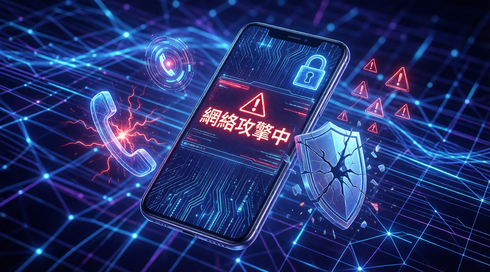

根據 Verizon 2026 DBIR 報告，移動端網絡攻擊正在超越傳統電郵威脅。移動端釣魚點擊率比電郵高出 40%，企業必須重新審視安全培訓策略。

Verizon 2026 年《數據洩露調查報告》(DBIR) 基於超過31,000 宗真實安全事件，涵蓋145 個國家、22,000 宗確認數據洩露。主要發現：
移動端攻擊（vishing 語音釣魚、文字詐騙）正在流行，成功率比傳統電郵高出 40%。研究指出原因：
「預 text攻擊」(Pretexting) 是新型社交工程手法，先建立信任再行騙，比傳統泛濫式釣魚更危險。
| 特性 | 傳統釣魚 | 預 text攻擊 |
|---|---|---|
| 手法 | 大量發送、廣撒網 | 先建立信任關係再有針對性攻擊 |
| 目標 | 隨機個人 | 特定人員（如財務部門） |
| 成功率 | 較低 | 較高 |
| 典型案例 | 假銀行電郵 | 假冒高管/供應商，通過即時通訊建立信任後騙改付款詳情 |
Verizon 報告明確指出：「社交攻擊使用以電話為中心的媒介——短信、語音或回調郵件——比使用傳統電郵向量更成功。」移動端已成為企業安全的新盲點，而多數企業的培訓仍停留在年度電郵測試層面。
移動端釣魚點擊率比電郵高出 40%，電話釣魚平均點擊率達 2%。
62% 的數據洩露涉及「人的因素」，網絡犯罪分子持續利用人性弱點。
AI 將漏洞利用時間從「數月」縮短至「數小時」，修補窗口大幅壓縮。
67% 員工使用非企業 AI，可能將機密數據（源代碼、研究資料）外洩。
2026 年報告首次記錄漏洞利用超越被盜憑證成為頭號入侵方式，原因包括：
「社交攻擊使用以電話為中心的媒介——短信、語音或回調郵件——比使用傳統電郵向量更成功。底線是：這些攻擊比我們習慣的防禦方式更有效。」
— Verizon 2026 DBIR 報告面對移動端威脅崛起，企業必須採取新策略：
| 威脅類型 | 風險 | 建議措施 |
|---|---|---|
| 移動端釣魚 | 點擊率高 40% | 開展移動端為主的釣魚識別訓練 |
| 預 text攻擊 | 建立信任後行騙 | 教育員工識別先建立信任再行騙的手法 |
| 自帶設備 | 企業安全盲點 | 重新審視自帶設備政策 |
| 影子 AI | 機密數據外洩 | 建立明確政策規範 AI 工具使用 |
| 漏洞利用 | AI 加速攻擊 | 縮短修補時間窗口，快速響應 |
企業安全培訓聚焦於識別電郵釣魚連結，電郵防護技術成熟。
攻擊者轉向 SMS、即時通訊、語音電話，用戶對移動端威脅意識不足。
先建立信任關係再行騙的精密攻擊手法成為主流，威脅企業財務安全。
AI 協助網絡犯罪分子快速利用漏洞，修補窗口從「數月」縮短至「數小時」。
員工使用非企業 AI 工具可能外洩機密數據，成為新型安全盲點。
Verizon 報告揭示了一個明確趨勢：移動端已成為企業安全的新盲點。隨著 AI 加速漏洞利用、預 text攻擊日益精密，傳統以電郵為中心的安全培訓已不足以應對現代威脅。
企業必須重新思考安全策略：從「年度電郵測試」轉向「持續性移動端安全意識培養」，並正視員工個人設備帶來的潛在風險。在 AI 時代，人的因素仍是安全鏈中最薄弱的一環。